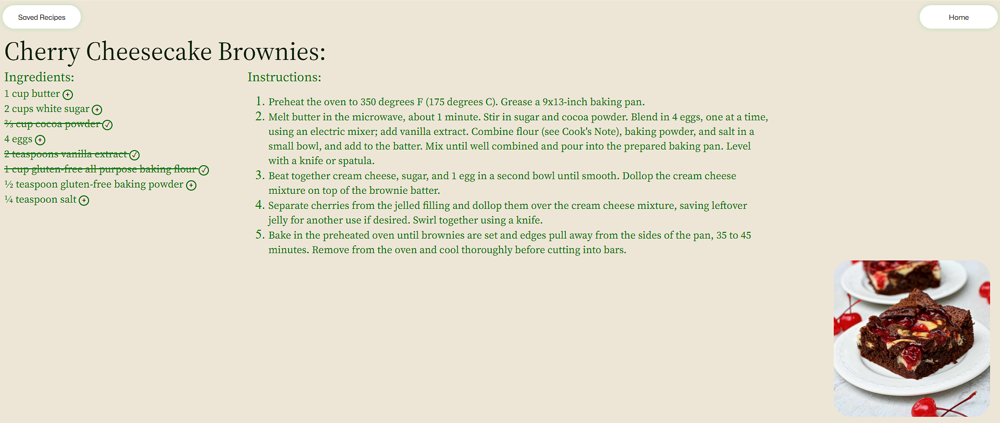

A recipe webapp project made for students
A simple and easy-to-use recipe webapp, utilizing Flask and SQLite, targeted towards busy people who have to cook on a tight schedule and budget.

Viewing Recipes

Saved Recipes
